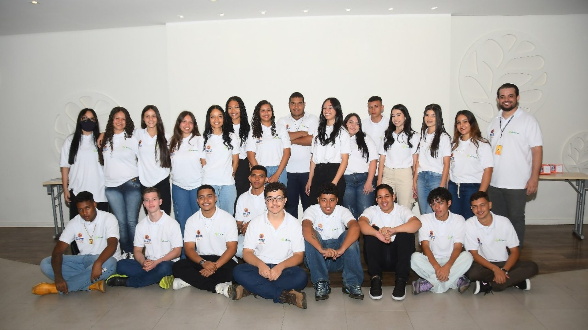
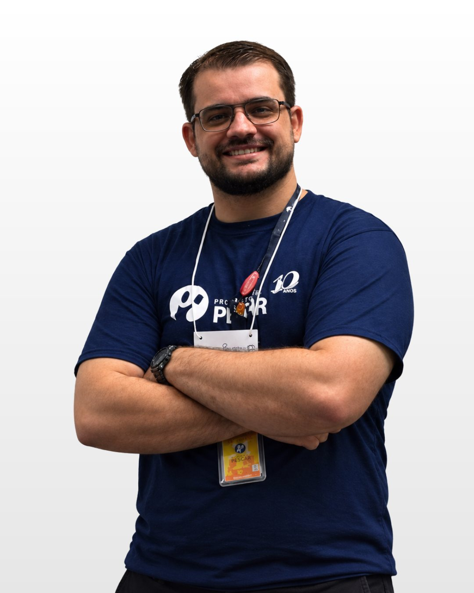
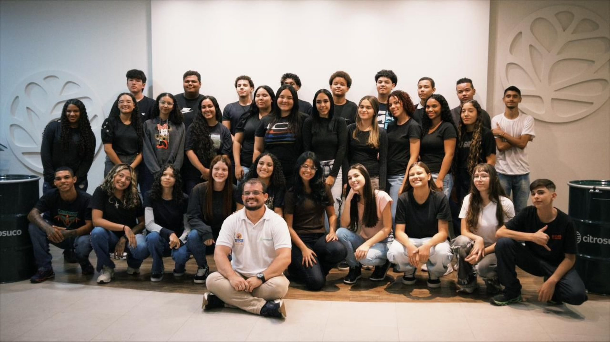
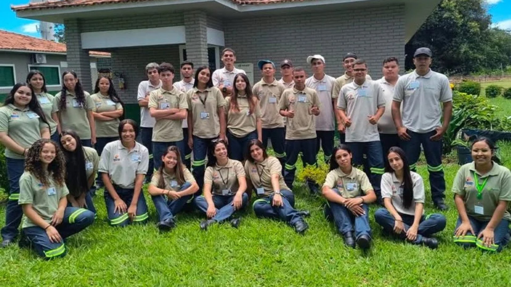
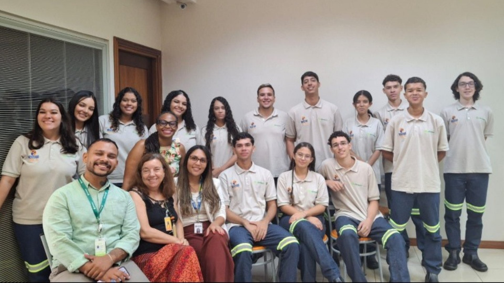
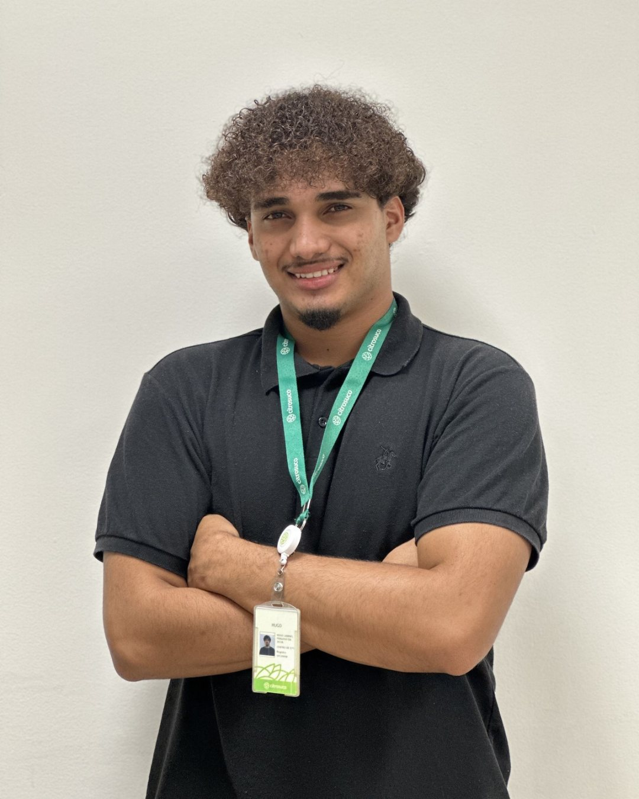
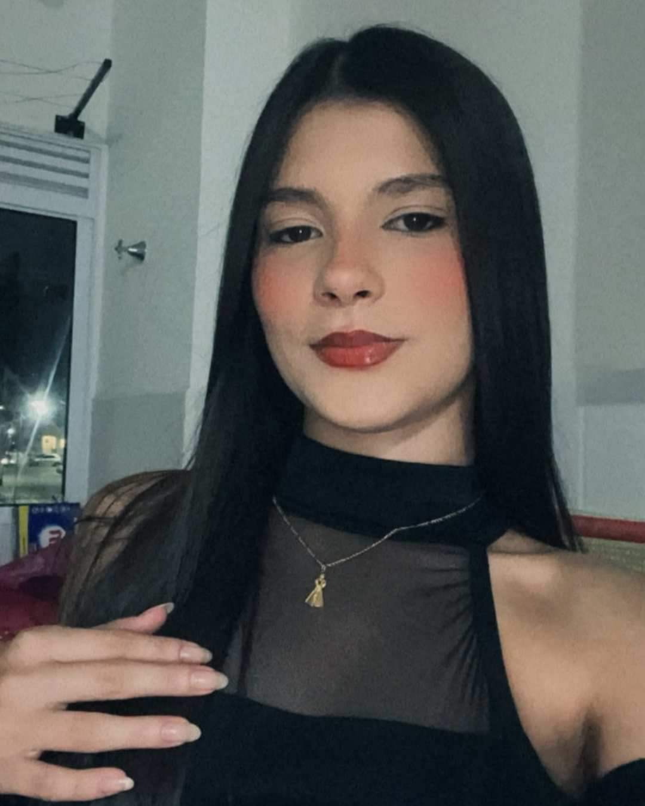
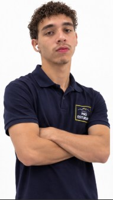

Desenvolvimento Pessoal
Autoconhecimento, autoestima, comunicação e trabalho em equipe para que o jovem construa seu próprio projeto de vida.
Parceria desde 2003
Desde 2003, Citrosuco e Pescar ensinam a pescar: jovens de Matão, Catanduva e Iaras que chegam em busca de uma oportunidade e saem prontos para o mundo do trabalho.
Conheça a históriaO Projeto Pescar
O Pescar começou em 1976, em Porto Alegre (RS), quando o empresário Geraldo Tollens Linck abriu as portas da própria empresa, a Linck S.A., para formar jovens. Em 1995 nasceu oficialmente a Fundação Projeto Pescar.
O nome vem do ditado “ensinar a pescar em vez de dar o peixe”: no lugar de assistência direta, formação. É o que a fundação chama de tecnologia social. Hoje a rede atende jovens de 16 a 19 anos em situação de vulnerabilidade social, com unidades em vários estados do Brasil, e já chegou à Argentina e ao Paraguai.

Turma 2024Missão da Fundação Projeto Pescar“Transformar vidas gerando competências e experiências de aprendizado para futura atuação empreendedora na construção de um mundo sustentável.”
Autoconhecimento, autoestima, comunicação e trabalho em equipe para que o jovem construa seu próprio projeto de vida.
Direitos, deveres, ética e participação na comunidade, formando cidadãos conscientes do seu papel na sociedade.
Conhecimentos técnicos e vivência real no ambiente da empresa, preparando o jovem para o primeiro emprego.
A jornada
Na prática, o Pescar é uma escola dentro da empresa: a Citrosuco abriga a unidade nas próprias instalações e seus funcionários participam como voluntários.
Todo ano começa uma nova turma, com aula inaugural que inclui fala das lideranças e apresentação dos jovens.
De segunda a sexta, 4 horas por dia, nas instalações da Citrosuco, convivendo com o dia a dia de uma grande indústria.
As aulas unem conhecimento técnico, prática, desenvolvimento pessoal e cidadania, com funcionários da empresa como voluntários.
Formação em operações agroindustriais, processos industriais, serviços administrativos ou logística, conectada às oportunidades do mercado.

Quem conduz a jornada
Educador Social do Projeto Pescar
É o educador social quem acompanha a turma no dia a dia: conduz as atividades de desenvolvimento pessoal e cidadania, faz a ponte com os voluntários da Citrosuco e apoia cada jovem na construção do seu projeto de vida.
Formação
A Citrosuco
Nascida da fusão de 2011 entre o Grupo Fischer e a Votorantim, dona da Citrovita, a Citrosuco é a maior produtora de suco de laranja do mundo.
Além de Catanduva e Araras (SP) e Lake Wales, na Flórida (EUA).
São cerca de 5.500 colaboradores fixos ao longo do ano.
Santos (Brasil), Wilmington (EUA), Gante (Bélgica), Toyohashi (Japão) e Newcastle (Austrália).
Óleo, bagaço, casca e sementes viram outros produtos. Desde os anos 80, Matão usa biomassa no lugar de óleo combustível.
Compromisso Social
A Citrosuco tem o compromisso de contribuir com o desenvolvimento dos municípios onde atua por meio do engajamento genuíno junto a eles, direcionando seus esforços na construção de uma estratégia de atuação social de longo prazo, capaz de suportar os negócios em seus desafios atuais e futuros.
Essa estratégia é definida após um mapeamento que considera as necessidades e os impactos para o negócio, bem como o tecido social e os atores presentes nos territórios.
Prioridades da atuação social
Formação que amplia horizontes e prepara para o futuro.
Acesso a oportunidades para quem mais precisa delas.
Valorização das diferenças como força dos territórios.
A Parceria
Na Citrosuco, o Pescar é um programa socioprofissionalizante desenvolvido em parceria com a Fundação Projeto Pescar. Ele promove o acesso do jovem em vulnerabilidade social ao mercado de trabalho, apoiando sua formação profissional e criando conexões entre seus interesses e as oportunidades do mercado, com foco no desenvolvimento da cidadania.
Hoje o programa está presente em três municípios paulistas: Matão e Catanduva, nas unidades industriais, e Iaras, na Fazenda Rio Pardo.
Áreas de formação oferecidas:

Unidades
Três municípios do interior paulista: duas unidades industriais e uma fazenda, no coração do cinturão citrícola.
Mapa ilustrativo — posições aproximadas.
Unidade industrial na cidade onde a Citrosuco nasceu e mantém sua sede.
Unidade industrial que integra a Citrosuco desde a fusão com a Citrovita.
O programa acontece na Fazenda Rio Pardo, onde os jovens conhecem de perto o campo e a produção de laranja.


Impacto
Trajetórias
Eles passaram pelo Projeto Pescar e hoje fazem parte do time da Citrosuco.
Turma 2024 do Pescar
Auxiliar de DHO
na Citrosuco

Turma 2025 do Pescar
Assistente de Operações Agrícolas
na Citrosuco

Turma 2024 do Pescar
Assistente de PCP
na Citrosuco

Turma 2025 do Pescar
Assistente de Operações Agrícolas
na Citrosuco